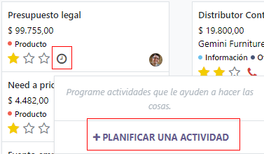
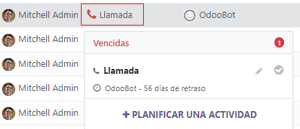
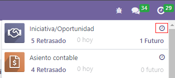
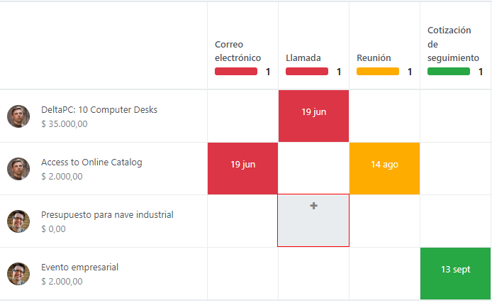
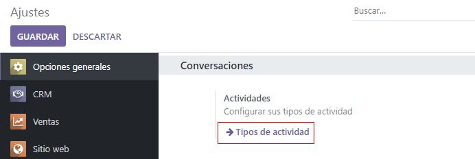
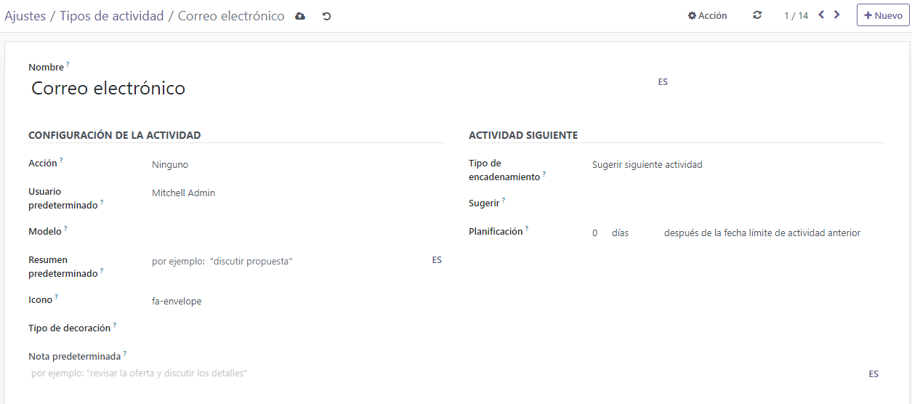
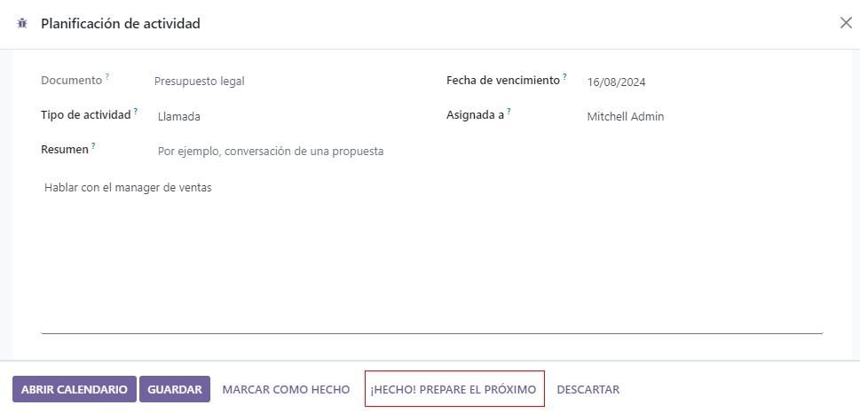

Activities¶
Activities are follow-up tasks tied to a record in an Odoo database. Activities can be scheduled on any page of the database that contains a chatter thread, kanban view, list view, or activities view of an application.
Schedule activities¶
One way that activities are created is by clicking the Schedule Activity button, located at the top of the chatter on any record. On the pop-up window that appears, select an Activity Type from the drop-down menu.
Tip
Individual applications have a list of Activity Types dedicated to that application. For example, to view and edit the activities available for the CRM application, go to .
Enter a title for the activity in the Summary field, located in the Schedule Activity pop-up window.
To assign the activity to a different user, select a name from the Assigned to drop-down menu. Otherwise, the user creating the activity is automatically assigned.
Lastly, feel free to add any additional information in the optional Log a note… field.
Note
The Due Date field on the Schedule Activity pop-up window auto-populates based on the configuration settings for the selected Activity Type. However, this date can be changed by selecting a day on the calendar in the Due Date field.
Lastly, click one of the following buttons:
Schedule: adds the activity to the chatter under Planned activities.
Mark as Done: adds the details of the activity to the chatter under Today. The activity is not scheduled, it is automatically marked as completed.
Done & Schedule Next: adds the task under Today marked as done, and opens a new activity window.
Discard: discards any changes made on the pop-up window.
Note
Depending on the activity type, the Schedule button may be replaced by a Save button, or an Open Calendar button.
Scheduled activities are added to the chatter for the record under Planned activities.
Activities can also be scheduled from the kanban, list, or activities view of an application.
Select a record on which to schedule an activity. Click on the 🕘 (clock) icon, then Schedule An Activity, and proceed to fill out the pop-up form.
Select a record on which to schedule an activity. Click on the 🕘 (clock) icon, then Schedule An Activity. If the record already has an activity scheduled, the clock icon may be replaced by a 📞 (phone) or an ✉️ (envelope) icon.
To open the activity view for an application, select the 🕘 (clock) icon from the menu bar anywhere in the database. Select any application from the drop-down menu, and click the 🕘 (clock) icon for the desired app.
Select a record on which to schedule an activity. Move across the row to find the desired activity type, then click the ＋ (plus sign).
Note
Activity colors, and their relation to an activity’s due date, is consistent throughout Odoo, regardless of the activity type, or the view.
Activities that appear in green indicate a due date sometime in the future.
Yellow indicates that the activity’s due date is today.
Red indicates that the activity is overdue and the due date has passed.
For example, if an activity is created for a phone call, and the due date passes, the activity appears with a red phone in list view, and a red clock on the kanban view.
View scheduled activities¶
To view scheduled activities, open either the or and click the 🕘 (clock) icon, located to the far-right side of the other view options.
Doing so opens the activities menu, showcasing all the scheduled activities for the user, by default. To show all activities for every user, remove the My Pipeline filter from the Search… bar.
To view a consolidated list of activities separated by the application where they were created, and by deadline, click the 🕘 (clock) icon on the header menu to see the activities for that specific application in a drop-down menu.
Configure activity types¶
To configure the types of activities in the database, go to .
Doing so reveals the Activity Types page, where the existing activity types are found.
To edit an existing activity type, select it from the list, then click Edit. To create a new activity type, click Create.
At the top of a blank activity type form, start by choosing a Name for the new activity type.
Activity settings¶
Action¶
The Action field specifies the intent of the activity. Some actions trigger specific behaviors after an activity is scheduled.
If Upload Document is selected, a link to upload a document is added directly to the planned activity in the chatter.
If either Phonecall or Meeting are selected, users have the option to open their calendar to schedule a time for this activity.
If Request Signature is selected, a link is added to the planned activity in the chatter that opens a signature request pop-up window.
Note
The actions available to select on an activity type vary, depending on the applications currently installed in the database.
Default user¶
To automatically assign this activity to a specific user when this activity type is scheduled, choose a name from the Default User drop-down menu. If this field is left blank, the activity is assigned to the user who creates the activity.
Default summary¶
To include notes whenever this activity type is created, enter them into the Default Summary field.
Note
The information in the Default User and Default Summary fields are included when an activity is created. However, they can be altered before the activity is scheduled or saved.
Next activity¶
To automatically suggest, or trigger, a new activity after an activity has been marked complete, the Chaining Type must be set.
Suggest next activity¶
In the Chaining Type field, select Suggest Next Activity. Upon doing so, the field underneath changes to: Suggest. Click the Suggest field drop-down menu to select any activities to recommend as follow-up tasks to this activity type.
In the Schedule field, choose a default deadline for these activities. To do so, configure a desired number of Days, Weeks, or Months. Then, decide if it should occur after completion date or after previous activity deadline.
This Schedule field information can be altered before the activity is scheduled.
When all configurations are complete, click Save.
Note
If an activity has the Chaining Type set to Suggest Next Activity, and has activities listed in the Suggest field, users are presented with recommendations for activities as next steps.
Trigger next activity¶
Setting the Chaining Type to Trigger Next Activity immediately launches the next activity once the previous one is completed.
If Trigger Next Activity is selected in the Chaining Type field, the field beneath changes to: Trigger. From the Trigger field drop-down menu, select the activity that should be launched once this activity is completed.
In the Schedule field, choose a default deadline for these activities. To do so, configure a desired number of Days, Weeks, or Months. Then, decide if it should occur after completion date or after previous activity deadline.
This Schedule field information can be altered before the activity is scheduled.
When all configurations are complete, click Save.
Note
When an activity has the Chaining Type set to Trigger Next Activity,
marking the activity as Done immediately launches the next activity listed in the
Trigger field.